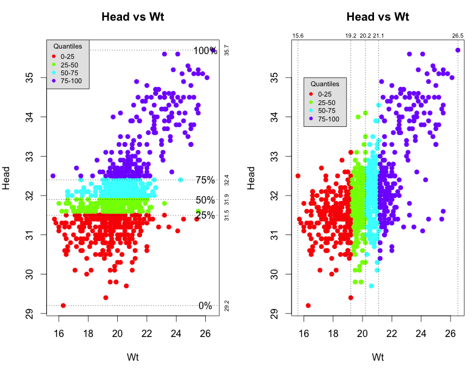
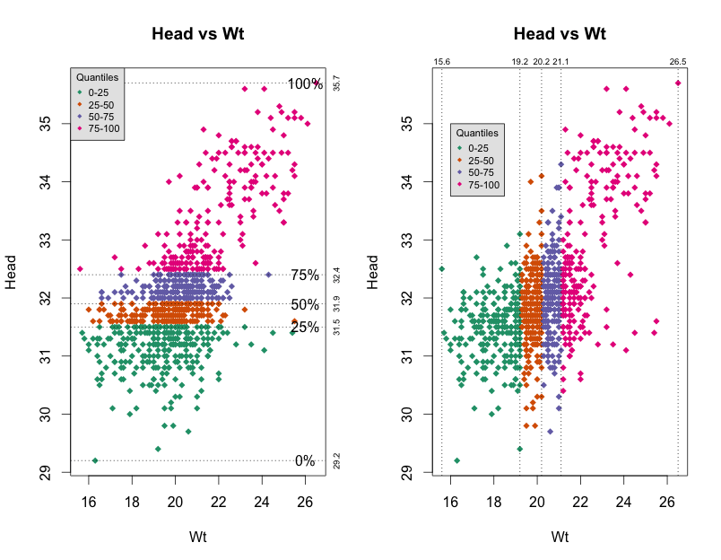
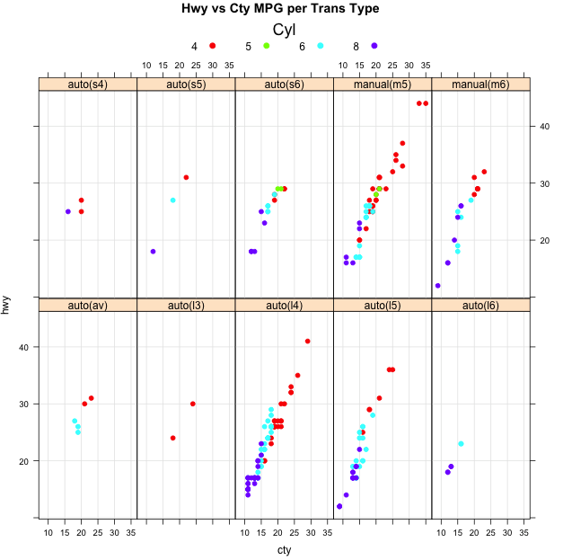
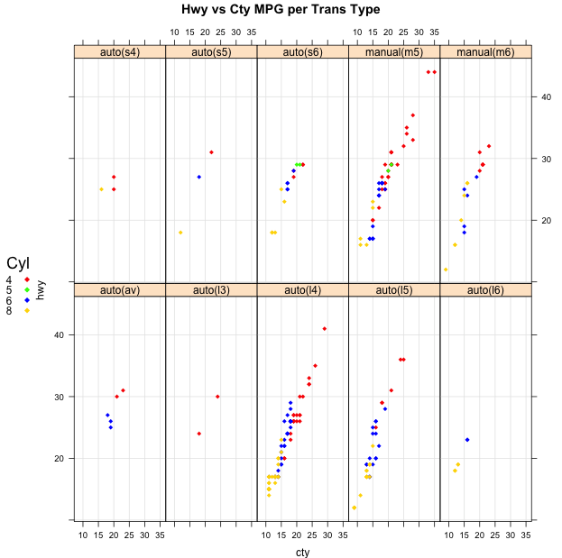

{kind=link}

The purpose of this exercise is to plot some information relating to seven body measurements on approximately 1,000 sparrows. The data comes from the University of Connecticut.
url <- "https://steviep42.bitbucket.io/bios545r_2017/DATA.DIR/Sparrows.txt" Sparrows <- read.delim(url) head(Sparrows) Species Sex Wingcrd Tarsus Head Culmen Nalospi Wt Observer Age 1 SSTS Male 58.0 21.7 32.7 13.9 10.2 20.3 2 0 2 SSTS Female 56.5 21.1 31.4 12.2 10.1 17.4 2 0 3 SSTS Male 59.0 21.0 33.3 13.8 10.0 21.0 2 0 4 SSTS Male 59.0 21.3 32.5 13.2 9.9 21.0 2 0 5 SSTS Male 57.0 21.0 32.5 13.8 9.9 19.8 2 0 6 SSTS Female 57.0 20.7 32.5 13.3 9.9 17.5 2 0 str(Sparrows) 'data.frame': 979 obs. of 10 variables: $ Species : Factor w/ 2 levels "SESP","SSTS": 2 2 2 2 2 2 2 2 2 2 ... $ Sex : Factor w/ 2 levels "Female","Male": 2 1 2 2 2 1 2 2 1 2 ... $ Wingcrd : num 58 56.5 59 59 57 57 57 57 53.5 56.5 ... $ Tarsus : num 21.7 21.1 21 21.3 21 20.7 22 20.8 20.1 22.2 ... $ Head : num 32.7 31.4 33.3 32.5 32.5 32.5 33.1 32.1 32.1 32.2 ... $ Culmen : num 13.9 12.2 13.8 13.2 13.8 13.3 13.8 13.5 13.7 13.6 ... $ Nalospi : num 10.2 10.1 10 9.9 9.9 9.9 9.9 9.8 9.8 9.8 ... $ Wt : num 20.3 17.4 21 21 19.8 17.5 19.6 21.2 18.5 20.5 ... $ Observer: int 2 2 2 2 2 2 2 2 2 2 ... $ Age : int 0 0 0 0 0 0 0 0 0 0 ...
You will be writing a function called sparrowplot that produces a scatterplot of Head vs Wt. The scatterplot will contain two subplots of Head vs. Wt. The first subplot has points with colors assigned according to what quantile they fall into relative to the Head measurement. The second subplot has points with colors assigned according to what quantile they fall into relative to the Wt measurement. Your code does not need to return anything since the only thing being computed is just a plot.
margins - Make sure that you include the values in the margins as specified. You will have to experiment with the cex argument to get the margin text values small enough so they don't overwrite each other. But not so small that you cannot see them !
legends - Make sure that you reproduce the legends as indicated. They should be very close to what you see depicted here. This is where you might benefit from developing your code on a larger display so you can make sure that the legends are too compressed and overlay the data in the plot. Note that the legend command has a number of ways to specify coordinates. You will need to experiment.
sparrowplot <- function(colors=rainbow(4),pch=19) {
# INPUT: colors=rainbow(4) - a vector of four valid color values corresponding to each
# quantile of the data being plotted (0%-25%,25%-50%,50%-75%,75%-100%)
#
# pch=19 - a value corresponding to the desired plot character (see example(pch))
#
# OUTPUT: A scatterplot containing two subplots of Head vs. Wt. The first subplot has points with colors
# assigned according to what quantile they fall into relative to the Head measurement. The second
# subplot has points with colors assigned according to what quantile they fall into relative to the
# Wt measurement.
(your code goes here)
}
Here are some examples:
sparrowplot() |
|  |
library(RColorBrewer) darkcols <- brewer.pal(4, "Dark2") darkcols [1] "#1B9E77" "#D95F02" "#7570B3" "#E7298A"
sparrowplot(colors=darkcols,pch=18) |
|  |
Here is a graphic I want you to reproduce using Base graphics. The image you see below is my reproduction. Although these types of charts have dubious value for general statistical analysis or inclusion in research papers they do offer opportunities to learn a lot about graphics. Your attempt should be very close to mine or the original. To pick colors accurately consider using the browser plug in called "ColorZilla" that is available for Firefox or Chrome. It has an "eye dropper" tool that lets you hover over a color and it will tell you the hexadecimal value of the color that you can then use when you specify colors in R. Windows users can download a standalone application for free that does this also. It is called Instant Eye Dropper.
Once you get the hex values you can create a vector of colors that can be used by R functions.Making this plot will be largely a manual process although you should use vectors where possible to simplify the construction of the chart. Use any of the high and low level Base graphic functions you want. Enclose all statements necessary to create this plot in a function called "chart". It doesn't need to have any arguments. We should be able to call it and it will produce the graphic as indicated below.
You will most definitely need to dig into the help pages for functions like mtext, segments, axis, etc and conduct some experiments to get things looking right. Refer to my reproduction and you will see that the grid lines do not overlay the bars in the plot. That is they are behind the bars. Your version should be like this also. Make reference to my class example wherein I reproduced an example plot I found in the newspaper which makes use of many of the low level Base graphics functions.
margins - The trickiest part of this graph (at least in my opinion) is getting the text in the bottom margin to line up correctly. This can be accomplished by recognizing that many of the low level functions such as segment provide arguments that let you address space in the margin. That's one way to think about i
chart()
Please refer to the plots below. Use the lattice package to construct replicas of the graphics. You will be using the mpg package which is part of the ggplot2 package which you must install so go ahead and do that now. You are plotting the hwy (highway) mileage vs cty (city) mileage for each value of the trans (transmission) category. You should provide a function named mympg() that we can call to reproduce the plots. Here is a shell of the function with some default arguments. The arguments are largely to influence the plot character that will be used to display the points, the color of the points, and the position of the legend. Note too that the plot character requested must also be matched in the legend. We talked about an approach on how to do this in class.
mympg <- function(colors=rainbow(4),pos="top",pch=19) {
# INPUT: colors - a 4 element vector with valid color names or hex values
# pos - where to put the legend "left","right","top","bottom"
# pch - a plot character value for the points and legend (See example(pch) )
#
# OUTPUT: a lattice scatterplot
# The following two statements are required to load in the mpg data
stopifnot(require(ggplot2)))
data(mpg)
Do error checking on arguments
Read in mpg file
Create factors if you want
Build a "key" to create an appropriate legend
Call the appropriate lattice graphics function
}
# Error check the layout
mympg(pos="lleft")
Error in mympg(pos="lleft") :
Sorry - valid positions are left, right, top, or bottom
mympg(pch=-9)
Error in mympg(pch=-9) :
Sorry - pch must be positive and between 0 and 25
To work this problem correctly look at the various arguments for the lattice commands.
head(mpg)
manufacturer model displ year cyl trans drv cty hwy fl class
1 audi a4 1.8 1999 4 auto(l5) f 18 29 p compact
2 audi a4 1.8 1999 4 manual(m5) f 21 29 p compact
3 audi a4 2.0 2008 4 manual(m6) f 20 31 p compact
4 audi a4 2.0 2008 4 auto(av) f 21 30 p compact
5 audi a4 2.8 1999 6 auto(l5) f 16 26 p compact
6 audi a4 2.8 1999 6 manual(m5) f 18 26 p compact
Fuel economy data from 1999 and 2008 for 38 popular models of car
Description:
This dataset contains a subset of the fuel economy data that the
EPA makes available on . It contains
only models which had a new release every year between 1999 and
2008 - this was used as a proxy for the popularity of the car.
Format:
A data frame with 234 rows and 11 variables
• manufacturer.
• model.
• displ. engine displacement, in litres
• year.
• cyl. number of cylinders
• trans. type of transmission
• drv. f = front-wheel drive, r = rear wheel drive, 4 = 4wd
• cty. city miles per gallon
Here are two examples of calling the mympg() function. We should be able to reproduce these plots using your code and by using the arguments specified in the call to the function. Note that the overall size does not have to exactly match what you see on this web page but it SHOULD BE VERY CLOSE ! However, the legend title, plot character, and layout should be IDENTICAL !As you develop your code it will be displayed in the graphics panel of R Studio which is smaller than what you see here. So as mentioned previously you should develop this function using a large display or by using the methods described in the introductory paragraph of this homework.
mympg() |
|  |
mympg(colors=c("red","green","blue","gold"),pch=18,pos="left") |
|  |
012014.csv, 022014.csv,...,122014.csvThe format of each file is the same although the data values will be different. The content relates to weather data for the zipcode 30322, (the Emory zip code), as recorded by the online weather service Wunderground. Here are the fields contained within each file. The relevant fields for your function are EDT, (the date of the measurement), Mean.TemperatureF, ( the Mean temperature for that given date), and MeanDew.PointF, (the Mean Dew point for that given date).
[1] "EDT" "Max.TemperatureF" [3] "Mean.TemperatureF" "Min.TemperatureF" [5] "Max.Dew.PointF" "MeanDew.PointF" [7] "Min.DewpointF" "Max.Humidity" [9] "Mean.Humidity" "Min.Humidity" [11] "Max.Sea.Level.PressureIn" "Mean.Sea.Level.PressureIn" [13] "Min.Sea.Level.PressureIn" "Max.VisibilityMiles" [15] "Mean.VisibilityMiles" "Min.VisibilityMiles" [17] "Max.Wind.SpeedMPH" "Mean.Wind.SpeedMPH" [19] "Max.Gust.SpeedMPH" "PrecipitationIn" [21] "CloudCover" "Events" [23] "WindDirDegrees"
You will be writing a function called weather that will use the .csv files as input. The weather function will accept three arguments:
Here are some suggested steps that might help you organize the flow of your function:
Your function will label the x axis accordingly. That is, it will flexibly handle ranges of dates. Use the following two examples as models. You will need to divide the time ranges into 6 intervals. There is a hard way to do this and an easy way. You already know a function that can help you with this although you can use whatever method you want. The gird lines MUST match up with the X labels. The horizontal grid lines must match the examples also.
weather("2014-01-15","2014-02-28","~/Downloads/weatherdat")
weather("2014-01-01","2014-12-31","~/Downloads/weatherdat")